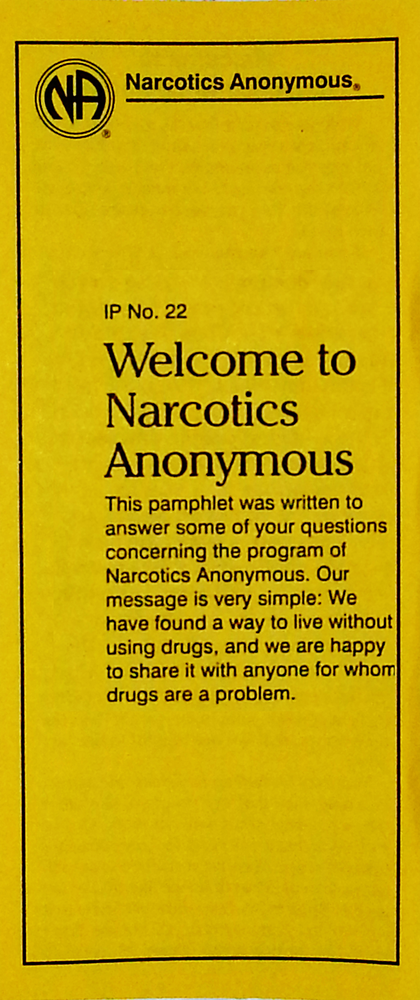
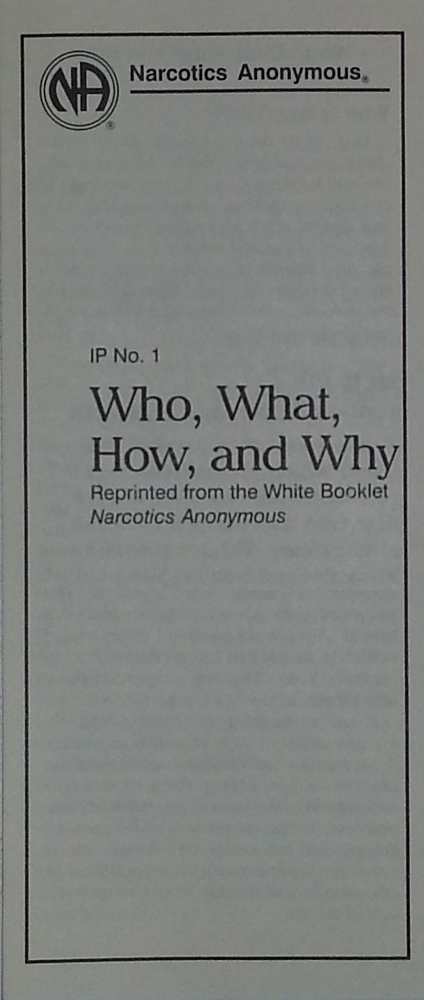
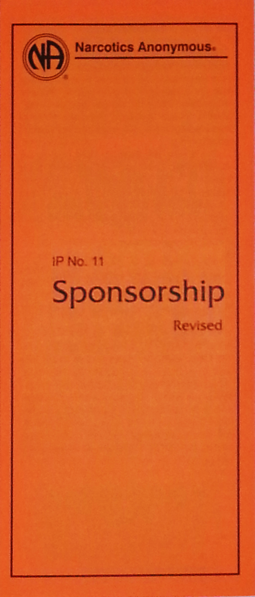
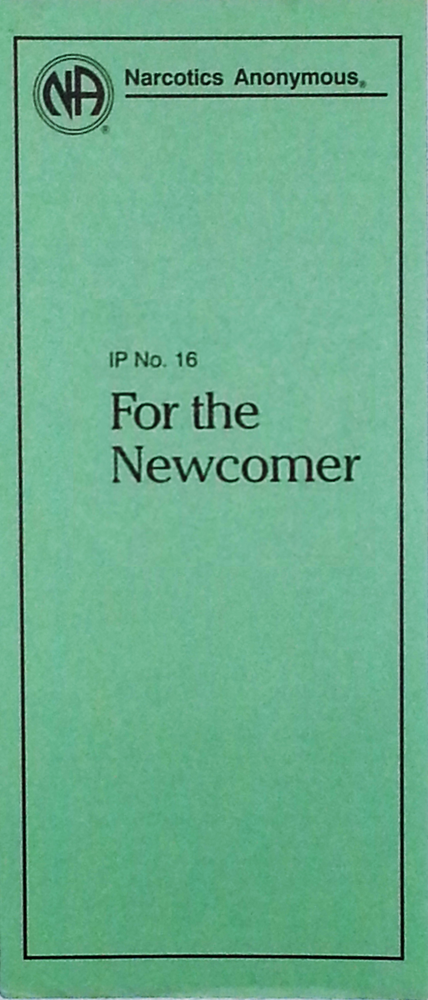
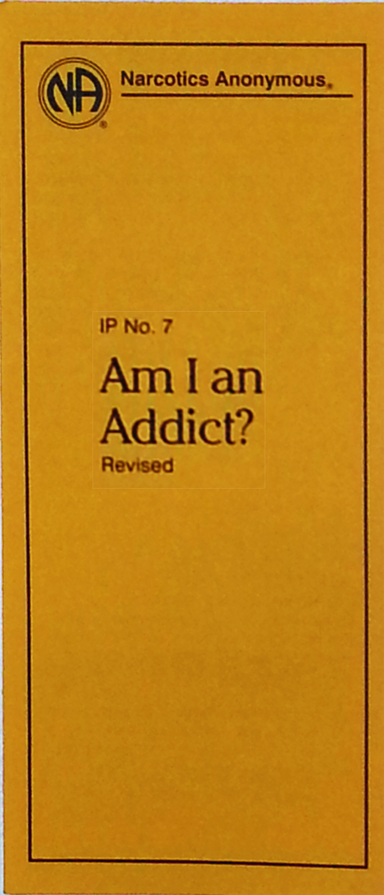

The Wheeling Area of Narcotics Anonymous—WASCNA—serves 36 meetings in West Virginia and Ohio, including in Wheeling, Follensbee, and Glen Dale West Virginia, and in Bridgeport, St. Clairsville, Steubenville, and Toronto, Ohio. Narcotics Anonymous is truly a world-wide multilingual multicultural fellowship with more than 67,000 weekly meetings in 137 countries. Narcotics Anonymous books and information pamphlets are currently available in 41 languages, with translations in process for 16 languages.
    
NA is a nonprofit fellowship or society of men and women for whom drugs had become a major problem. We are recovering addicts who meet regularly to help each other stay clean. This is a program of complete abstinence from all drugs. There is only one requirement for membership, the desire to stop using. We are not interested in what or how much you used or who your connections were, what you have done in the past, how much or how little you have, but only in what you want to do about your problem and how we can help.
The simple message of Narcotics Anonymous is… “That an addict, any addict, can stop using drugs, lose the desire to use and find a new way to live."